Challenge
AI 能力快速增长，经营任务缺乏合理的体验承接
业务背景
京麦持续推进中小商诊断激发、152 项经营任务、专家团的 AI 化建设。核心体验挑战随着 AI 功能不断增加，产品逐渐形成传统功能页面（A 面）与 AI 经营空间 Agent（C 面）并存的形态。但不同经营任务在复杂度、上下文依赖和操作方式上存在明显差异，现有任务承接方式没有充分适配 AI 体验。问题不在于缺少统一的视觉样式，而在于：
- 场景缺乏区分：不同复杂度的经营任务，没有充分按照任务特征选择合适的 AI 体验方式。
- 动线承接不合理：哪些任务应该在 A 面即时完成，哪些需要通过工具执行，哪些应该上翻至 C 面 Agent，缺少清晰的判断依据。
- 容器选择缺乏体系：AI 能力不断出现，但任务与交互容器之间尚未建立系统性的对应关系。
任务与承接方式不匹配
任务没有明确的 A/C 面分工和跳转规则
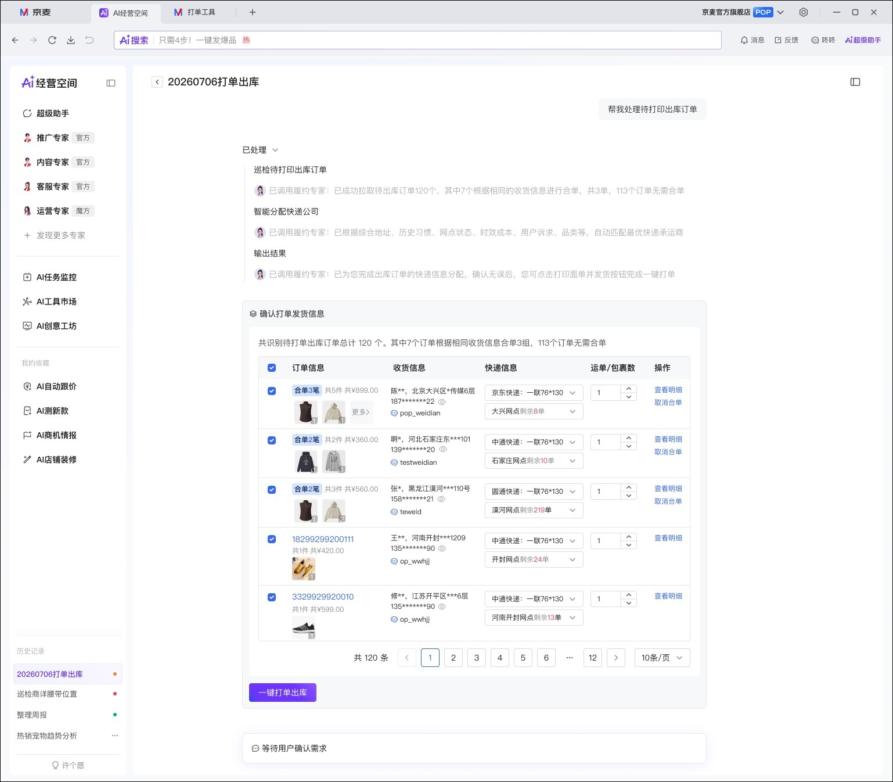
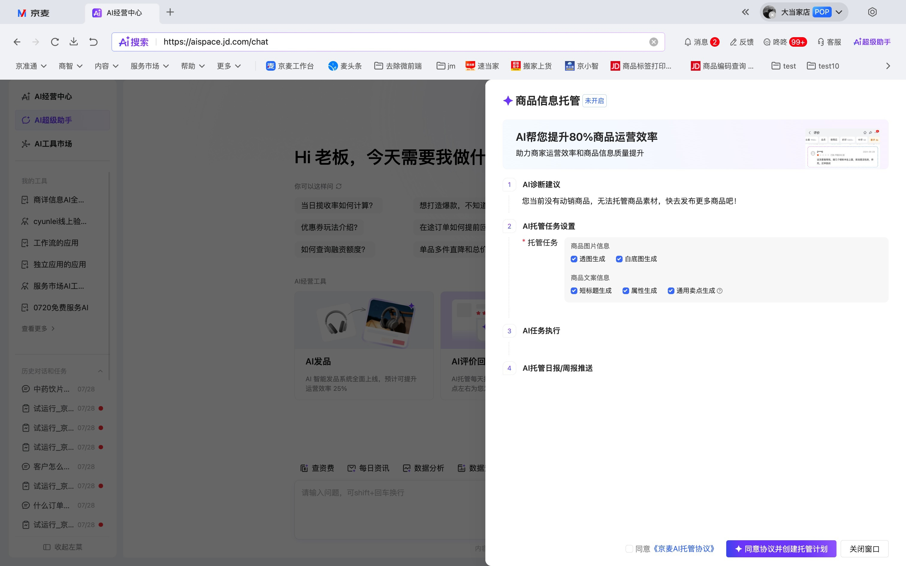
定义 AC 面跳转规则
定义 A 面内容上翻到 C 面承载的容器
任务分发跳走 无法连续
无统一的任务工作台及激发策略
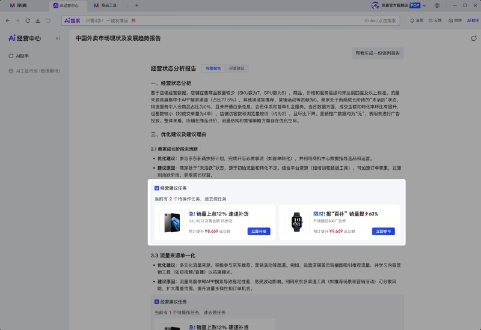
建立统一的框架聚合任务、执行、跟踪
递进式的任务串联与激发策略
结论：尚未形成一套能判断任务轻重、承接路径、统一资产的任务解决体系，由此形成核心设计命题：面对 152 项不同类型的经营任务，如何基于任务复杂度与用户经营场景，建立「场景 × 动线 × 容器」的体验架构，让每项 AI 能力都能以合理的方式被用户使用。
Strategy
通过「场景 × 动线 × 容器」建立任务承接规则
场景决定任务复杂度，任务复杂度决定动线，动线决定承载方式。
场景
根据调研、事业群提炼的操盘方法围绕商家高频场景。任务越轻越贴合上下文，应在 A 面即时完成；任务流程越复杂，则需要 AI 工具或 Agent 承接。
单点任务
强页面上下文- 低复杂度/低风险
- 用户需要快速就地完成
- 结果直接作用于当前表单、列表
单任务流程
多步骤任务较为固定- 多步且沉淀为通用工具
- 需要与超级助手或专家 Agent 联动
- 未来可被 Agent/Skill 串联调用
多任务流程
任务目标不完全明确- 需要跨域诊断
- 需要经营建议和任务编排
- 需要跟踪效果
场景举例
- AI 商品好评回复
- 商品中/差评维护
- 商品场景图/白底图/透图维护
- AI 售后
- 售前客服接待
- 广告计划创建投放
- 活动页装修
- 商品标题维护
- 商品评价托管
- 批量活动打标
- 商品批量换图
- AI 生图
- 延迟发货报备
- 营销活动巡检
- 店铺诊断
- 商品信息分优化
- 商机情报
- 大促库存盘点
- 店铺星级
- 爆品孵化
- …
动线
重新梳理 AI 在不同复杂度任务中的介入方式，明确统一的动线判断依据。
单点任务（A 面）
在当前页面即时完成操作。
- 承载方式
- 卡片、模块
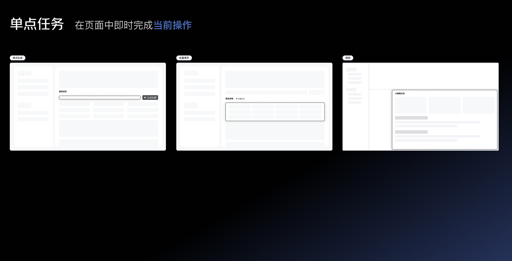
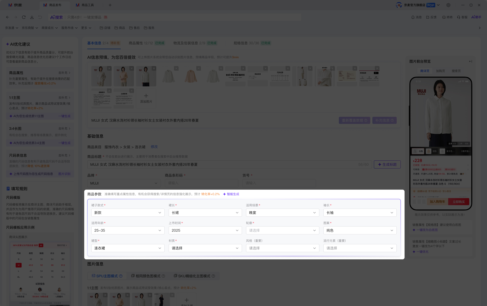
单任务流程（A 面／C 面）
从业务触点发起，通过工具或流程完成一项任务。
- 承载方式
- 卡片、模块、Flow
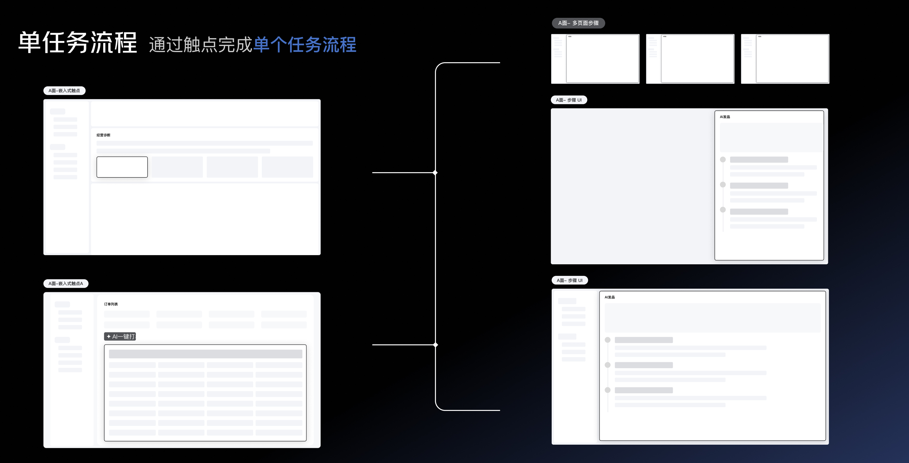
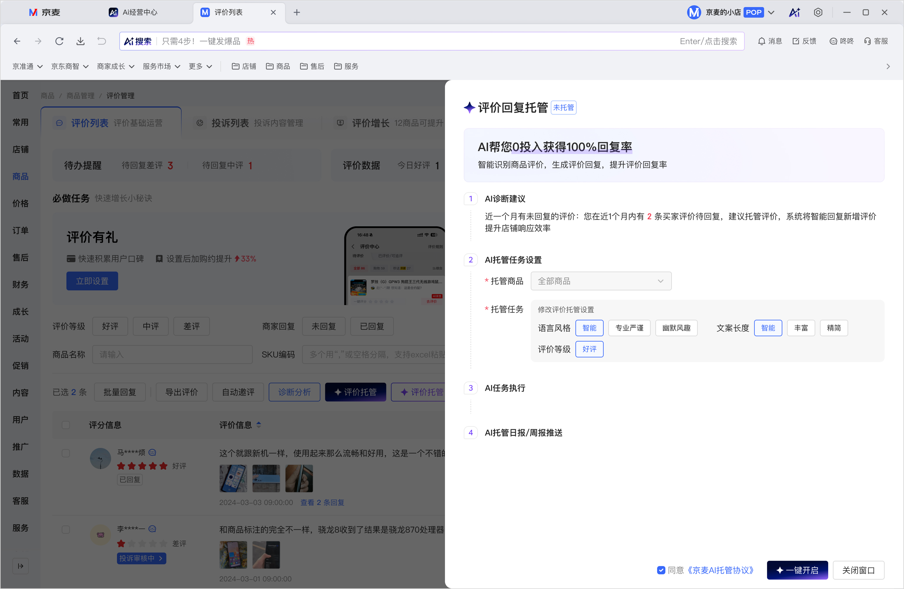
多任务流程（C 面）
由 Agent 串联多个经营动作，支持顺序执行、自定义编排或选择执行。
- 承载方式
- 首页卡片、对话、编排、对齐
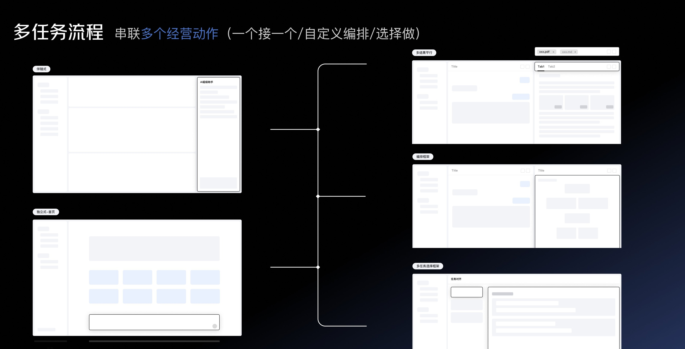
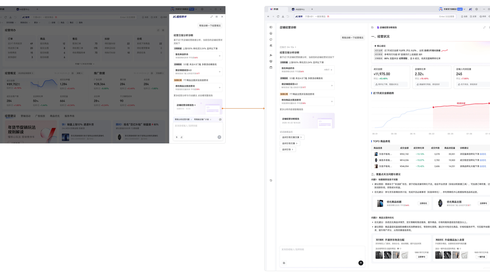
容器
拉通不同任务场景容器的资产，保持一致性
单点任务
- 单点式
- 按钮、标签、Mini 引导卡片
- 嵌入式
- 诊断卡、任务卡、工具卡、商品卡
单任务流程
- 传统功能页
- 表单、表格、图表
- 步骤 Flow
- Step 流程
- Workflow
- Check 卡片、产出物卡片
多任务流程
- 伴随式／首页
- 诊断卡、任务卡、工具卡、商品卡、输入框
- 独立式对话
- 输入框、COT、check 卡片、产出物卡片、任务卡、工具卡
- 多任务串联
- 目标对齐（输入）、任务发现、过程对齐（check 卡片）、结果呈现（产出物卡片）
基础类资产
对话类资产
Pattern
归纳上翻 C 面的三类场景级 AI 范式
任务分布
对 152 项经营任务按频次、A/C 面分布和任务类型进行盘点。
A/C 面形态分布。A 面 AI 工具有 16 个，占 10.4%。需上翻 C 面的有 71 个，约占 46.1%。暂无 AI 的任务占 43.5%。
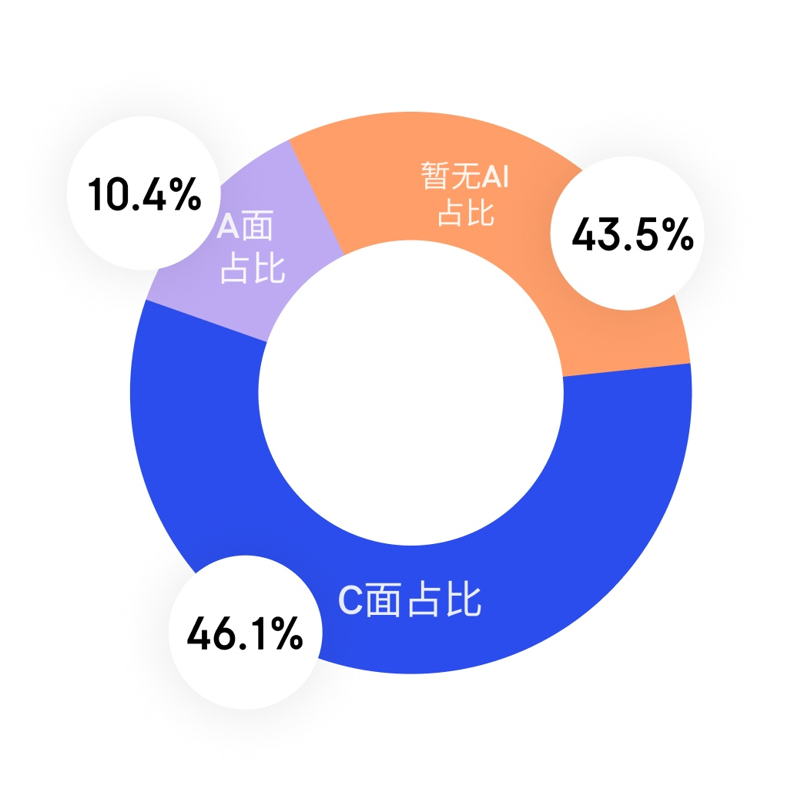
任务类型分布。盘出 70 个拟 AI 化场景，按 A 面业务属性分为六类。
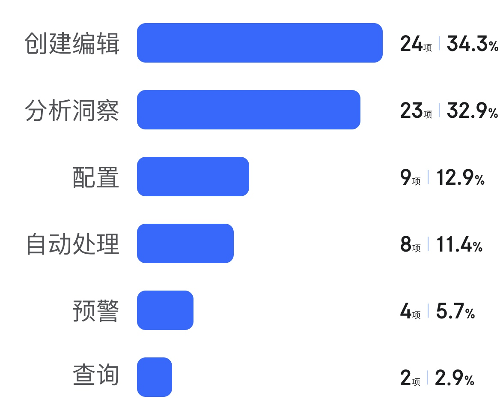
原文数量与百分比的统计分母待核对。
三类典型案例
将 A 面中可复用、可连续、可编排的能力抽象为 C 面工具和 Agent。各条线的 AI 能力阶段不同，需按实际情况制定适配与降级规则。
配置设置类
需求澄清 → 生成编辑 → 应用生效
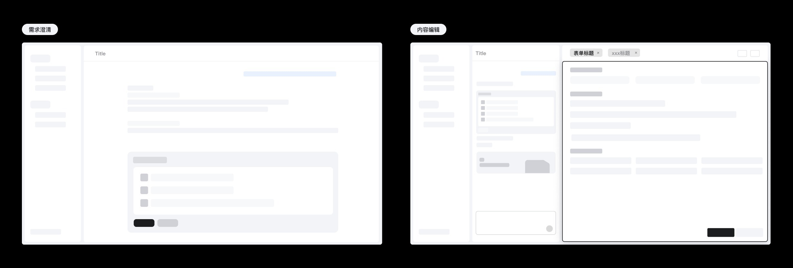
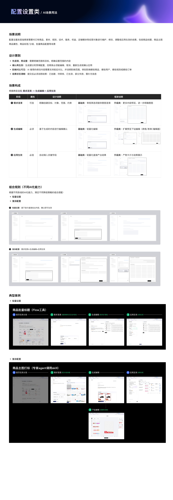
商品主图打标，专家 Agent 调用 Skill。商品批量标题复用采销 Workflow 工具。
分析洞察类
数据读取 → 摘要报告（数据卡片）→ 建议或违规处理
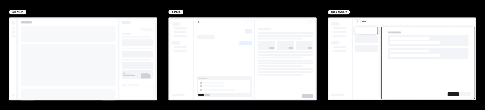
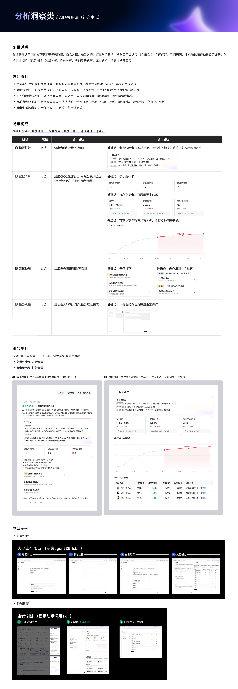
店铺诊断，超级助手 Agent 调用 Skill。大促库存盘点，专家 Agent 调用 Skill。
创建编辑类
会员促销创建。营销专家子 Agent 调用 Skill。
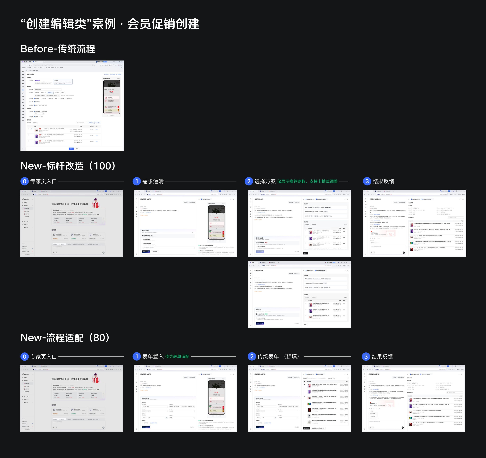
配置设置类
商品主图打标。商品专家子 Agent 调用 Skill，涉及采销能力上翻和改造。
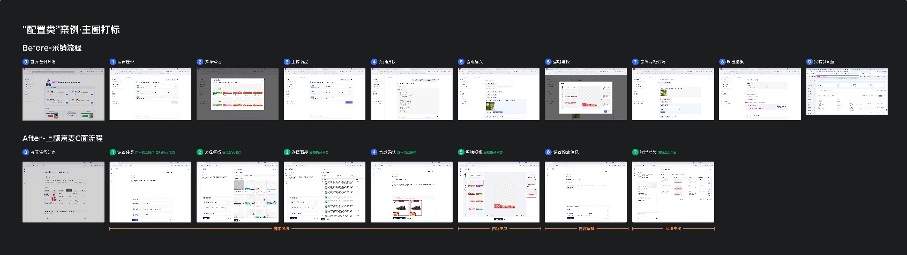
分析洞察类
店铺诊断。超级助手主 Agent 调用 Skill。
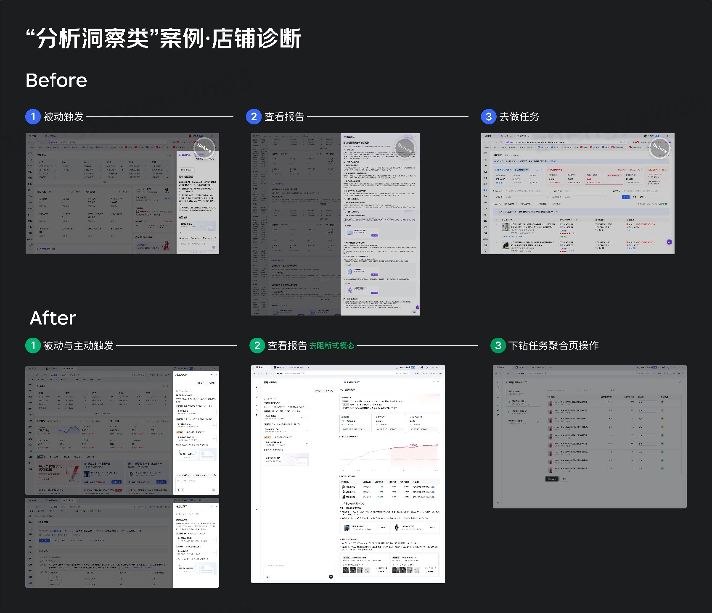
适配与降级体验规则
展开四种建设方式的 100／80／60 分标准
| 建设方式 | 100 分 | 80 分 | 60 分 |
|---|---|---|---|
| 采销能力复用 · 已有采销 AI 工具上翻至商家 C 面 | 流程闭环、无跳转无阻断；适配商家语境，话术与交互简洁；符合最新 C 面 AI 规范和卡片样式 | 流程闭环、无跳转无阻断；符合最新 C 面 AI 规范和卡片样式 | ／ |
| 全新建设 · 选择高频任务，新建 C 面工具或 Agent | 减轻操作压力，以辅助判断为主；给出推荐理由、数据依据或置信表达；核心流程可复用、可扩展；符合最新 C 面 AI 规范和卡片样式 | 给出推荐理由、数据依据或置信表达；明确触点入口并符合跳转规则 | ／ |
| A 面工具嵌入 · 将原 A 面工具嵌入 C 面 | 减轻操作压力，以辅助判断为主；给出推荐理由、数据依据或置信表达；核心流程可复用、可扩展；符合最新 C 面 AI 规范和卡片样式 | 完成核心流程闭环；符合最新 C 面 AI 规范和卡片样式；基于原有框架适配改造 | 保障 C 面整体导航和主流程；提供基础入口、返回和失败兜底 |
| 三方应用卡控 · ISV 开发的独立应用和专家 | 联合头部 ISV 打造三方标杆 | ／ | 保障 C 面整体导航和主流程；提供基础入口、返回和失败兜底 |
Design Wiki
从设计规范到 AI 可生成的设计知识
Design Wiki 原理
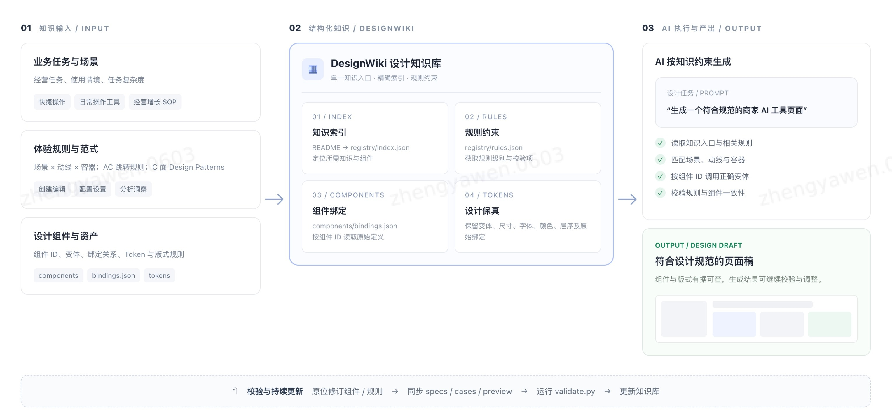
Design Wiki 工作流
在个人工作流中先创建 Preview，反复打磨组件的视觉样式。确认组件效果后，按规则与布局封装为生稿 Skill，再输出团队 Handoff，帮助同事达到既定生成效果。
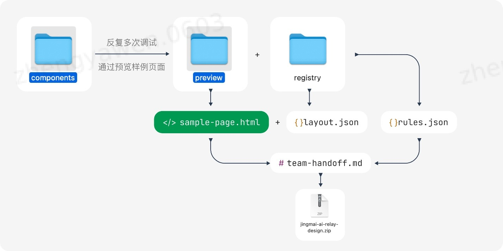
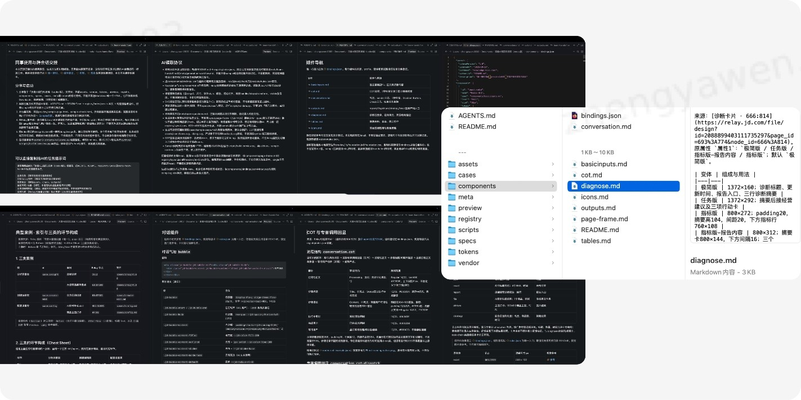
页面生成 Skill
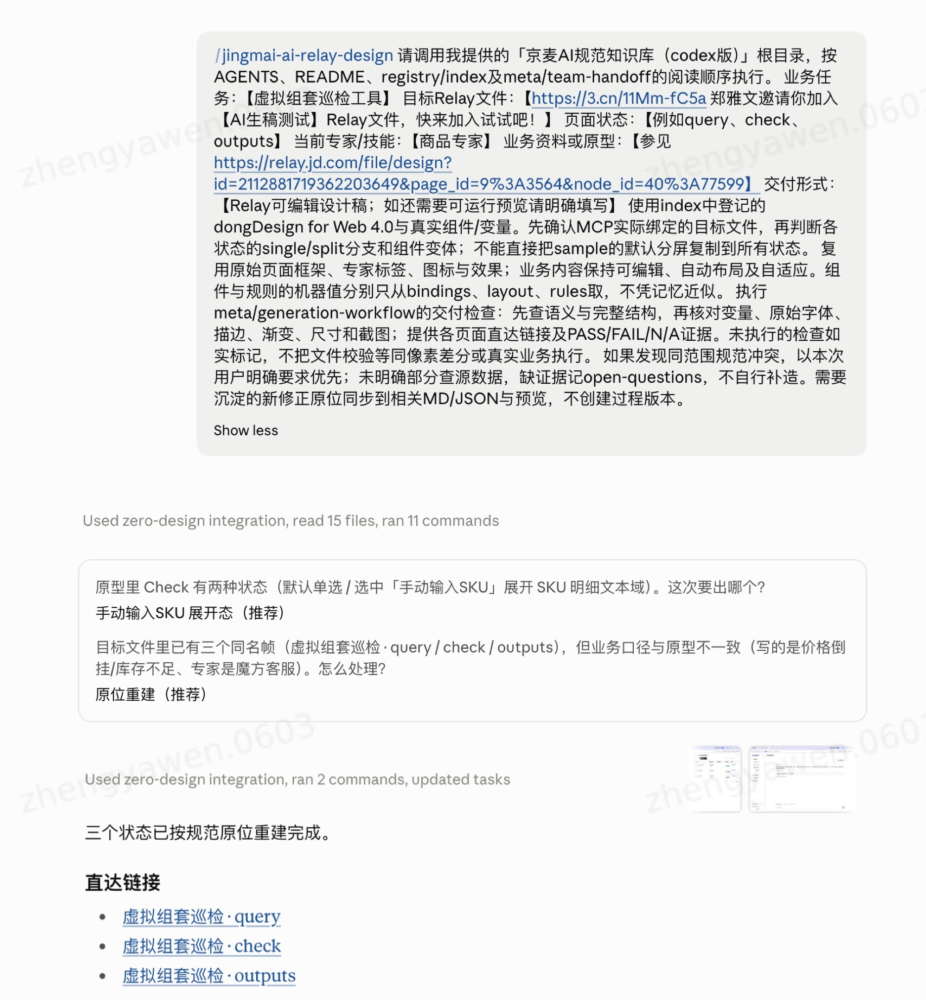